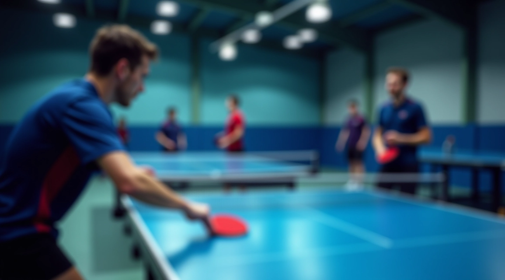

إتقان اللوب الخلفي في تنس الطاولة
نحن لوب الجزيرة للتدريب المتقدم
منذ تأسيسنا عام 2018، نركز على تطوير المهارات الأساسية والمتقدمة لاعبي تنس الطاولة. نقدم برامج تدريبية منظمة تغطي التقنيات الأساسية والحركات المعقدة. نحن نؤمن أن التدريب الصحيح يبدأ من الأساسيات وينتهي بالتطبيق العملي في المنافسات الحقيقية.

كيف بدأنا وأين وصلنا
لوب الجزيرة للتدريب المتقدم بدأت برؤية بسيطة: تطوير لاعبي تنس الطاولة من خلال تدريب عملي ومنظم. اليوم، البرامج التدريبية متاحة للاعبين من مختلف الأعمار والمستويات.
البدايات المتواضعة
بدأنا برؤية واضحة: تقديم تدريب عالي الجودة في تنس الطاولة. لاحظنا أن معظم اللاعبين يحتاجون إلى فهم عميق لتقنيات اللوب الخلفي. كان هذا الدافع الأساسي لإنشاء برامج متخصصة تركز على هذه المهارة الأساسية.
النمو والتطور
خلال السنوات الماضية، طورنا نهجاً شاملاً يجمع بين التدريس الفردي والبرامج الجماعية. أضفنا معدات حديثة وكادر تدريبي ذو خبرة عالية. الآن نقدم برامج متنوعة تناسب جميع الأعمار والمستويات.
التركيز على الجودة
ما يميز لوب الجزيرة للتدريب المتقدم هو التزامنا بالجودة. كل جلسة تدريب مصممة بعناية. كل لاعب يحصل على انتباه شخصي وتقييم دوري لمتابعة تطوره الفني والبدني.
الرؤية المستقبلية
نسعى لأن نصبح المركز المفضل لتدريب تنس الطاولة في القاهرة. نريد تطوير لاعبين قادرين على المنافسة على المستويات الإقليمية والدولية. نعمل بجد لتحقيق هذه الأهداف من خلال التدريب المستمر والتطوير.
ما نقدمه لك
لوب الجزيرة للتدريب المتقدم متخصصة في تعليم تقنيات اللوب الخلفي والمهارات المتعلقة بها. نركز على تطوير القاعدة التقنية القوية التي تمكّن اللاعبين من التقدم والنمو.
تقنيات اللوب الخلفي
نعلم الخطوات الأساسية للوب الخلفي من البداية. كل تمرين مصمم لبناء الثقة والتحكم. نركز على الموضع الصحيح وحركة الذراع والتوازن.
تقوية العضلات
نقدم تمارين متخصصة لتقوية الذراع والكتف والساق. هذه التمارين تحسن من قوة الضربة والثبات. تمارينا مصممة خصيصاً لاحتياجات لاعبي تنس الطاولة.
تقييم التقدم
نتابع تقدمك بشكل دوري ونقدم ملاحظات بناءة. نستخدم معايير واضحة لقياس التحسن. كل لاعب يحصل على خطة تطوير مخصصة له.
برامج متدرجة
برامجنا تبدأ من الأساسيات وتتقدم للمستويات العليا. كل مستوى يبني على السابق. اللاعبون يتقدمون بسرعة متناسبة مع قدراتهم.
تدريب جماعي وفردي
نقدم جلسات فردية مكثفة وبرامج جماعية تفاعلية. كل صيغة لها فوائدها. اللاعبون يستفيدون من التعلم الفردي والمنافسة الجماعية.
تحضير المنافسات
نحضر اللاعبين للمنافسات من خلال محاكاة حقيقية. نركز على الضغط النفسي والتركيز. لاعبونا يدخلون المنافسات بثقة وتحضير جيد.
كيف نعمل
نحن لا نؤمن بالحلول السريعة. التطور في تنس الطاولة يتطلب وقتاً والتزاماً. نركز على بناء أساس قوي يمكن اللاعب من التقدم المستمر والمستدام.
"التدريب الجيد ليس فقط عن الحركات الصحيحة، بل عن فهم السبب وراء كل حركة. نحن نعلم اللاعبين ليس فقط كيف يلعبون، بل لماذا يلعبون بهذه الطريقة."
— فلسفة لوب الجزيرة للتدريب المتقدم
خطوات التدريب لدينا
برنامج التدريب في لوب الجزيرة للتدريب المتقدم مصمم بعناية لضمان النتائج الأفضل. نتبع خطوات واضحة وموثقة تضمن تقدماً مستمراً.
التقييم الأولي
نبدأ بتقييم شامل لمستوى اللاعب الحالي. نحدد نقاط القوة والضعف. هذا يساعدنا على وضع خطة تدريب مخصصة تناسب احتياجات كل لاعب.
وضع الخطة المخصصة
بناءً على التقييم، نضع خطة تدريب مفصلة. الخطة تتضمن الأهداف القصيرة والطويلة الأجل. كل خطة مرنة وتتكيف مع تقدم اللاعب.
التدريب المنتظم
نقدم جلسات تدريبية منتظمة ومنظمة. كل جلسة لها أهداف واضحة وتمارين محددة. نركز على التطور التدريجي والثابت.
التقييم والتطوير
نقيّم التقدم بانتظام ونعدّل الخطة حسب الحاجة. نقدم ملاحظات بناءة وتشجيع مستمر. هذا يضمن أن كل لاعب يحقق أقصى إمكانياته.
معلومة مهمة
المعلومات المقدمة على هذا الموقع مخصصة للأغراض التعليمية والإعلامية فقط. التقدم في تنس الطاولة يعتمد على عوامل عديدة منها الالتزام الشخصي والخبرة السابقة والممارسة المستمرة. نتائج التدريب تختلف من شخص لآخر. نحن نوصي بالبحث عن إرشادات متخصصة والعمل مع مدربين مؤهلين قبل اتخاذ أي قرار متعلق بالتدريب الرياضي. كل لاعب مسؤول عن صحته وسلامته الجسدية أثناء ممارسة التدريب.